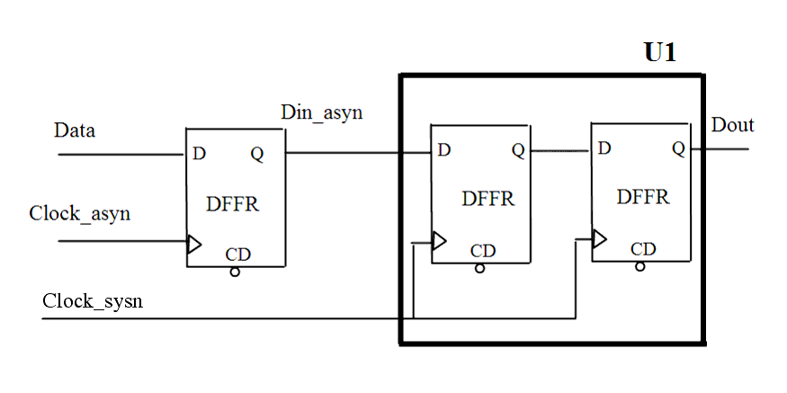

Description
Leda flags this rule when it detects asynchronous inputs to a clock system in the design that are not clocked twice. When asynchronous inputs converge on one clock domain, it can affect timing analysis and cause metastability. To synchronize the inputs with the target clock system, clock the asynchronous inputs twice. If there is no synchronizer in the destination clock domain where clock domains cross or there is a synchronizer, but the crossing is handled with any combinational gate, this rule is flagged.This rule reports the source register, source clock, destination register, and destination clock.You can configure this rule using the rule_set_parameter Tcl command to set the SYNCHRONIZER_FF_NUMBER to indicate the required number of flip-flops (connected as a shift register with the same clock) used as synchronizers. The default value is 2. For example:leda> rule_set_parameter -rule NTL_CLK05 -parameter SYNCHRONIZER_FF_NUMBER -value {3}You can set the parameter ALLOW_LOGIC_BEFORE_SYNC to 1, that configures the rule to allow combinational logic before synchronizer. The default value is 0. For example: leda> rule_set_parameter -rule NTL_CLK05 -parameter ALLOW_LOGIC_BEFORE_SYNC -value {1}You can set the parameter ALLOW_LOGIC_AMONG_SYNC to 1, that configures the rule to allow combinational logic among synchronizer. The default value is 0. For example:leda> rule_set_parameter -rule NTL_CLK05 -parameter ALLOW_LOGIC_AMONG_SYNC -value {1}You can set the parameter ALLOW_BUFF_INV_IN_SYNC_FFS to 1, that configures the rule to allow buffer and inverter before synchronizer. The default value is 1. You can set the parameter ALLOW_INVERTED_CLOCK to 1, that configures the rule not to flag if data crosses 2 flip-flops using different clock edges of the same clock. The default value is 1.By default, this rule checks the synchronizers present between different clock domains. You can set the parameter CHECK_DIFFERENT_CLOCK_ORIGINS to 1 to also check synchronizers present between different clock origins. The default value of this parameter is 0.
Policy
DESIGN
Ruleset
CLOCKS
Language
VHDL/Verilog
Type
Hardware
Severity
Error
This is an example of valid Verilog code, followed by a circuit diagram that illustrates the correct clocking of asynchronous inputs using back-to-back flip-flops:
module ntl_clk05_top (Clk_asyn, Clk_sys, Reset, Data, Dout); input Clk_asyn, Clk_sys, Reset, Data; output Dout; reg Din_asyn, Dout_temp, Dout; //DFFR -- flip-flop with reset DFFR I0(.D(Data), .CP(Clock_asyn), .CD(Reset), .Q(Din_asyn)); //Din_asyn is an asynchronous signal DFFR I1(.D(Din_asyn), .CP(Clock_sys), .CD(Reset), .Q(Dout_temp)); // Clocked once DFFR I2(.D(Dout_temp), .CP(Clock_sys), .CD(Reset), .Q(Dout)); // OK -- Clocked twice endmodule
%s1 is the hierarchy name of the clock origin of target flip-flop.
%s2 is the hierarchy name of the source flip-flop.
%s3 is the hierarchy name of the clock origin of source flip-flop.
%s4 is the hierarchy name of the combinational gate (only one for example) before (or among) synchronizer, when parameter ALLOW_LOGIC_BEFORE_SYNC (or ALLOW_LOGIC_AMONG_SYNC) is set to 0, if there is any.
%s5 - %sN is the hierarchy name of elements on the data path.
Secondary Message
--- Target Clock: %s1--- Source Register: %s2--- Source Clock: %s3--- Gate on path: %s4--- Combinatorial path between registers: %s5--- %s6... Gate before synchronizer (or Gate among synchronizer): %s4 --- %sN
Argument